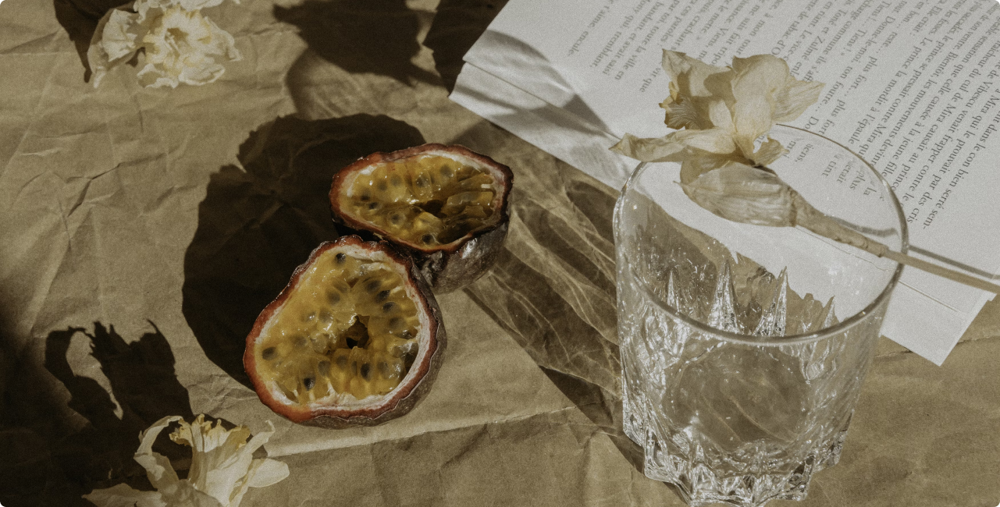

Từ những quả cherry đỏ mọng được hái vào sáng sớm, đến nho đen không hạt căng mọng từng tép; từ bưởi da xanh căng tròn ngọt
thanh, đến xoài cát lịm vàng ươm... mỗi loại trái cây đều được tuyển chọn khắt khe theo quy chuẩn riêng. Không chỉ đảm bảo
độ tươi ngon tuyệt đối, chúng tôi còn quan tâm đến trải nghiệm thị giác và cảm xúc người dùng – vì chúng tôi hiểu, chất
lượng không chỉ nằm ở vị, mà còn ở cảm nhận.
Đối tượng mà chúng tôi hướng đến không phải là số đông, mà là những khách hàng biết mình cần gì – những người đề cao sự an toàn, sạch sẽ, và đặc biệt là cảm nhận được cái đẹp trong từng chi tiết nhỏ. Với họ, việc chọn trái cây không chỉ là mua sắm – đó là một cách sống, một tuyên ngôn tinh tế và bền vững.
Đối tượng mà chúng tôi hướng đến không phải là số đông, mà là những khách hàng biết mình cần gì – những người đề cao sự an toàn, sạch sẽ, và đặc biệt là cảm nhận được cái đẹp trong từng chi tiết nhỏ. Với họ, việc chọn trái cây không chỉ là mua sắm – đó là một cách sống, một tuyên ngôn tinh tế và bền vững.
Tại Asclepius, hành trình mỗi quả trái cây bắt đầu từ những vùng trồng đạt chuẩn, nơi khí hậu, thổ nhưỡng và con người
cùng nhau kiến tạo nên chất lượng nguyên bản nhất. Chúng tôi hợp tác trực tiếp với các trang trại hữu cơ, không can thiệp
hóa học, không biến đổi gen, không chất bảo quản – chỉ có sự kiên nhẫn, chăm sóc cẩn trọng và niềm tin tuyệt đối vào sức
mạnh của thiên nhiên.
Khác biệt lớn nhất của Asclepius không nằm ở sản phẩm đơn thuần – mà ở tư duy phục vụ và triết lý sống mà chúng tôi hướng tới. Chúng tôi mong muốn đưa trái cây trở lại đúng vị trí vốn có: không chỉ là thực phẩm hàng ngày, mà là biểu tượng của một lối sống lành mạnh, tinh tế và đầy ý thức. Một hộp trái cây sang trọng của Asclepius không chỉ là món quà cho sức khỏe, mà còn là lời chúc, sự trân trọng và gu thẩm mỹ cao cấp.
Asclepius không ngừng hoàn thiện quy trình từ nông trại đến bàn ăn. Tất cả sản phẩm được đóng gói bằng vật liệu thân thiện với môi trường, đảm bảo vừa sang trọng vừa an toàn. Hệ thống bảo quản lạnh, vận chuyển tiêu chuẩn và chăm sóc khách hàng tận tâm – tất cả nhằm đảm bảo rằng mỗi quả trái cây đến tay khách hàng đều giữ trọn tinh thần nguyên bản, không bị xô lệch bởi thời gian hay khoảng cách.

Khác biệt lớn nhất của Asclepius không nằm ở sản phẩm đơn thuần – mà ở tư duy phục vụ và triết lý sống mà chúng tôi hướng tới. Chúng tôi mong muốn đưa trái cây trở lại đúng vị trí vốn có: không chỉ là thực phẩm hàng ngày, mà là biểu tượng của một lối sống lành mạnh, tinh tế và đầy ý thức. Một hộp trái cây sang trọng của Asclepius không chỉ là món quà cho sức khỏe, mà còn là lời chúc, sự trân trọng và gu thẩm mỹ cao cấp.
Asclepius không ngừng hoàn thiện quy trình từ nông trại đến bàn ăn. Tất cả sản phẩm được đóng gói bằng vật liệu thân thiện với môi trường, đảm bảo vừa sang trọng vừa an toàn. Hệ thống bảo quản lạnh, vận chuyển tiêu chuẩn và chăm sóc khách hàng tận tâm – tất cả nhằm đảm bảo rằng mỗi quả trái cây đến tay khách hàng đều giữ trọn tinh thần nguyên bản, không bị xô lệch bởi thời gian hay khoảng cách.
Thế Giới Trái Cây Asclepius
Về công ty
Giới thiệu
Sản phẩm
Shopping
Liên hệ
Email: asclp@gmail.com
Hotline: 1900 1337
Facebook: asclepius.vn
Asclepius

Củ Cải Đỏ – Sự Tươi Mát Từ Lòng Đất
Cherry Vàng – Ngọt Ngào, Thanh Nhã Và Đầy Giá Trị
Nấm Shiitake – Thanh Đạm, Bổ Dưỡng Và Đậm Đà Tự Nhiên